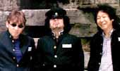

|
들국화 헌정 콘서트 |
 |
록그룹 '들국화'의 업적을 기리는
헌정콘서트가 2월 14일 저녁 7시30분 세종
문화회관 대극장에서 열린다. 헌정 앨범 발매와 함께 열리는 이번 공연은 앨범에 참여한
후배가수 15개팀이 80년대 한국 록의 상징적 존재였던 이들의 음악과 업적을 재조명한다.
콘서트에는 강산에, 김장훈, 동물원,
신해철, 윤도현밴드, 이승환, 이은미 ,델리스파이스, 언니네이발관, 렐레쉬, 크라잉 넛 등 오버와 언더에서 활동하는 대표적인 밴드들이 대거
참여한다.
83년 결성한 들국화는 2년 뒤 '행진' '그것만이 내 세상' 등이 담긴 불후의 명반 을 발표, 80만장의 앨범판매고,
6백회가 넘는 라이브 무대를 통해 한국 록의 전설적인 존재로 자리잡은 들국화는 83년 그룹 해체 후 우여곡절 끝에 지난해 9월 연이은 콘서트로
팬들 곁으로 돌아왔다. 이번 공연에도 후배들과 함께 직접 연주를 펼치며 극적인 무대를 꾸밀 예정. |
|
| |